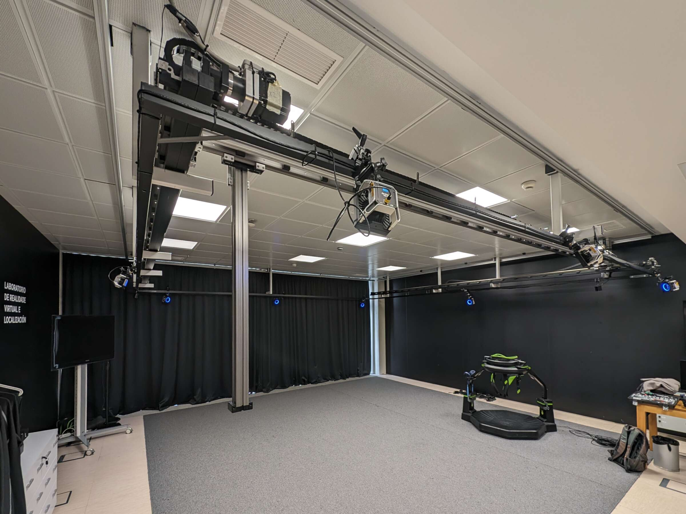
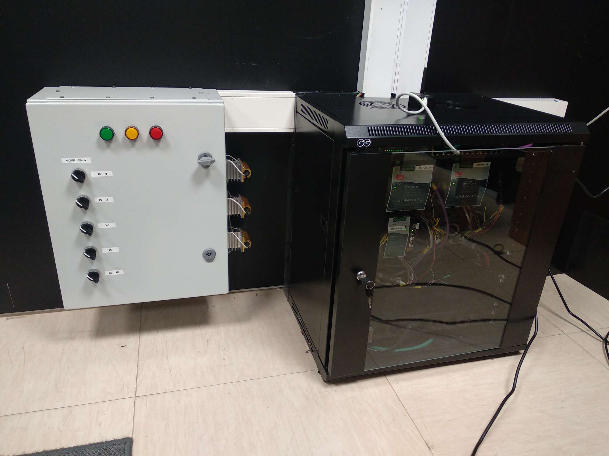
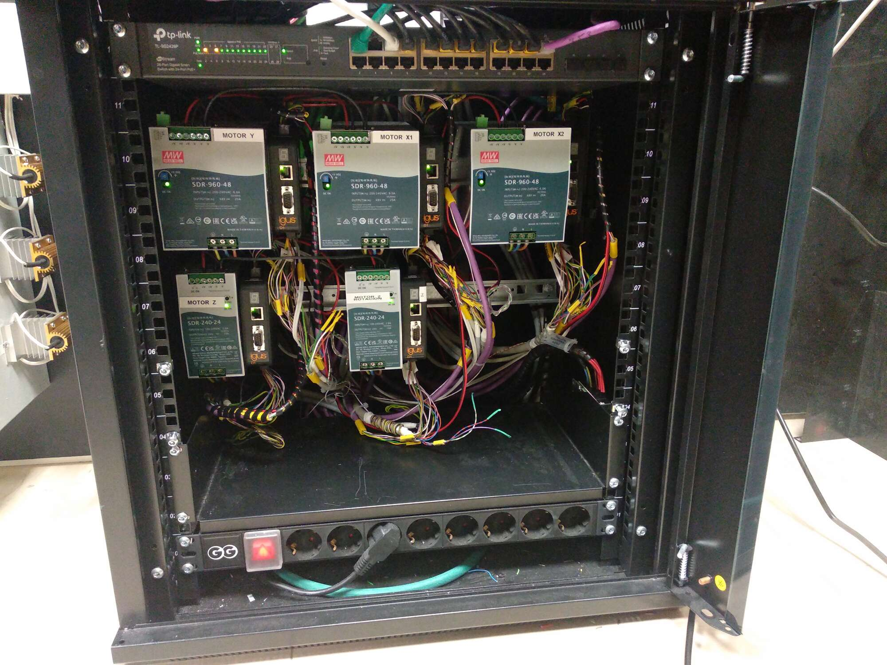
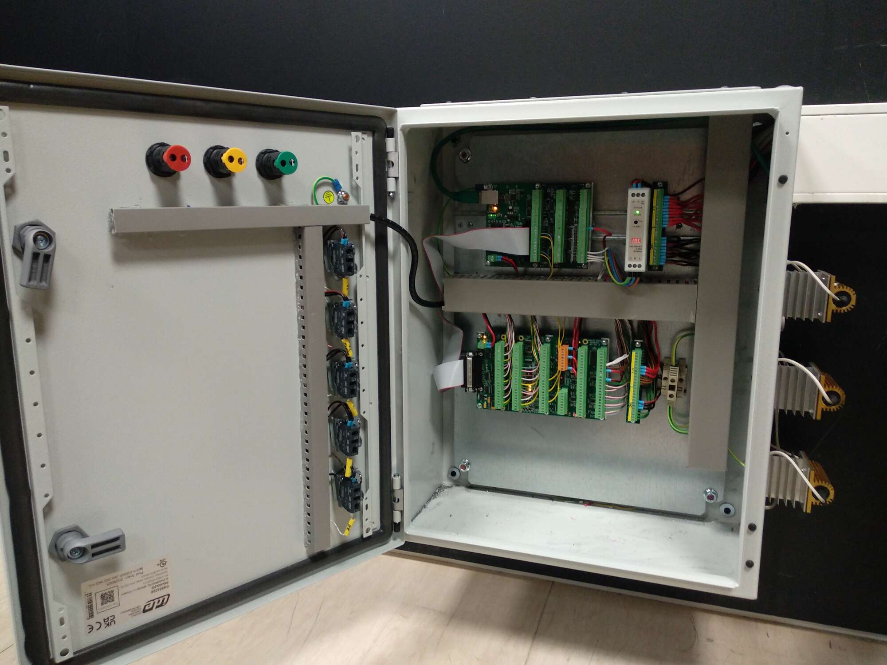

1. Introduction¶
The gantry robot uses LinuxCNC as its control platform, integrated with Mesa Electronics interface boards and igus® dryve D1 motor controllers. It provides a displacement range of 5.3m (X) × 5.2m (Y) × 1m (Z), with a total work volume of approximately 6m (X) × 6m (Y) × 2m (Z). Fig. 1 shows a photograph of the gantry robot structure. The system diagram is shown in Fig. 2.
This system was developed from our LinuxCNC testbed (https://github.com/GTEC-UDC/linuxcnc_testbed). The system wiring diagram, detailing all components and their interconnections, is available in the project repository. Below, we detail the system’s configuration, including the boards and components used.
{kind=link}

Fig. 1 Gantry robot structure.¶
{kind=link}
Fig. 2 Gantry robot system diagram.¶
1.1. LinuxCNC¶
LinuxCNC, formerly known as the EMC, is a software system designed for the computer control of various machine tools, such as milling machines and lathes, as well as robots like PUMA and SCARA, and other computer-controlled machinery with up to nine axes. LinuxCNC is free, open-source software. Current versions are fully licensed under the GPL and LGPL.
In our system, LinuxCNC communicates with the igus® dryve D1 controllers via the MESA 7I96S and 7I77 boards. LinuxCNC is responsible for coordinating the operation of all motors, providing precise, real-time control over the system.
Detailed information on LinuxCNC’s operation and configuration can be found in Section 3.
1.2. System Hardware¶
The following section describe the different hardware components of the system, such as the motor controllers, interface boards, motors, and safety systems. Fig. 3 belowshows the electrical cabinet and rack that house the interface boards, motor controllers, and power supplies.
{kind=link}

Fig. 3 Electrical cabinet (left) containing the MESA interface boards and rack (right) containing the motor controllers and power supplies.¶
1.2.1. Main Components¶
Control Computer: PC running LinuxCNC for real-time motor coordination
4 Motor Controllers igus® dryve D1: igus® dryve D1 can be used for controlling stepper, DC, and brushless motors in industrial and automation applications. The igus® dryve D1 supports the following communication methods with control systems:
CANopen: A communication protocol widely used in industrial automation systems, built upon the CAN bus (ISO 11898) standard.
Modbus TCP: A communication protocol extensively employed in industrial applications for data transmission over Ethernet networks using the TCP protocol.
Analog and Digital Signals: In addition to network communication options, the igus® dryve D1 can receive analog and digital signals for direct control.
In this system, we communicate with the igus® dryve D1 controllers using MESA 7I96S and 7I77 boards using digital and analog signals. This setup enables LinuxCNC to have precise, real-time control over the motors’ operation.
Fig. 4 below shows the interior of the rack containing the four igus® dryve D1 motor controllers and the power supplies.
{kind=link}

Fig. 4 Interior view of the rack showing the igus® dryve D1 motor controllers and power supplies.¶
1.2.2. Interface Boards¶
Main Board MESA 7I96S: This board is the primary hardware interface between LinuxCNC and the igus® dryve D1 controllers. It connects to the computer running LinuxCNC via an Ethernet connection. Its main functions include:
Controlling the stepper motor by sending step and direction signals to its designated igus® dryve D1 controller.
Receiving input signals from limit switches.
Expansion Board MESA 7I77: This board connects to the 7I96S board via a 25-pin flat cable. Its primary functions are:
Controlling the brushless motor by sending an analog speed signal to its corresponding igus® dryve D1 controller.
Receiving position feedback signals from motor encoders.
Receiving warning and error signals from the controllers.
Receiving the emergency stop signal when the emergency stop switch is activated.
Fig. 5 below shows the MESA 7I96S and 7I77 boards installed in the electrical cabinet.
{kind=link}

Fig. 5 Interior view of the electrical cabinet showing the MESA 7I96S and 7I77 interface boards.¶
1.2.3. Motors and Actuators¶
X-axis Motors: 2 × igus® MOT-EC-86-C-I-A - NEMA 34 brushless with integrated 1000 PPR encoder. A 10:1 reduction gear was installed on the motor shaft.
Y-axis Motor: 1 × igus® MOT-EC-86-C-I-A - NEMA 34 brushless with integrated 1000 PPR encoder. A 10:1 reduction gear was installed on the motor shaft.
Z-axis Motor: 1 × igus® MOT-AN-S-060-035-060-M-C-AAAC - NEMA 24 stepper with 500 PPR encoder.
1.2.4. Safety Systems and Sensors¶
Emergency Stop Switch: This switch has both a normally closed and a normally open contact.
Limit Sensors: 4 × igus® inductive sensors for position limit detection.
LED Indicators: Custom indicators with red, yellow, and green LEDs, which provide a visual display of the system’s status.
1.2.5. Power Supply¶
48V Power Supplies: 3 × MEAN WELL SDR-960-48 for brushless motor power.
24V Power Supply: 1 × MEAN WELL SDR-240-24 for stepper motor power.
Additional 24V Power Supply: For igus® dryve D1 logic and MESA 7I77 field power.
5V Power Supply: MEAN WELL MDR-20-5 for MESA 7I77 field I/O logic.
1.2.6. Linear Units¶
The system is built with igus® self-lubricating linear units that enable lifetime operation of moving parts without external lubrication. The linear units details are the following:
X and Y axes: igus® ZLW-20120/20200 linear axes with toothed belts. The feed rate is 144 mm/rev.
Z axis: igus® SAW-1660 linear axis with lead screws. The feed rate is 4 mm/rev.
1.3. Calibration System¶
This project includes the following calibration components:
Custom LinuxCNC kinematic module
calibxyzkinsinlinuxcnc/components/linuxcnc_calibrated_xyz_kins: enables real-time positioning error compensation.Calibration analysis software in
calibration/: Python-based tools for processing OptiTrack data and generating calibration parameters.
This solution enables the gantry robot to achieve sub-centimeter precision throughout the entire working volume of 5.3m × 5.2m × 1m.